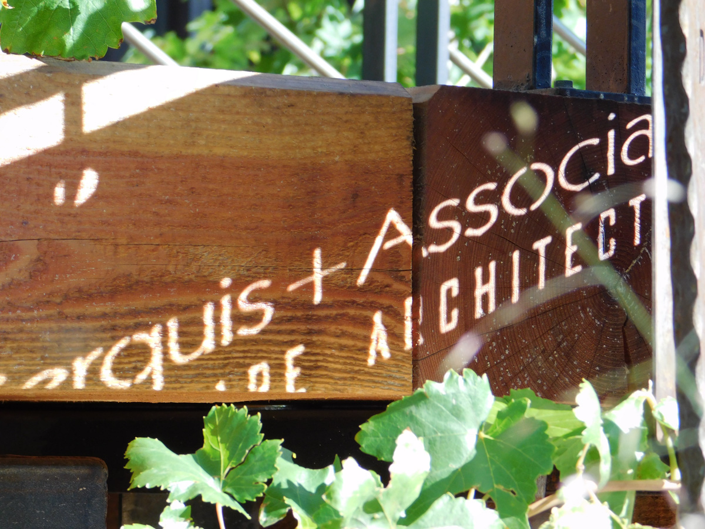
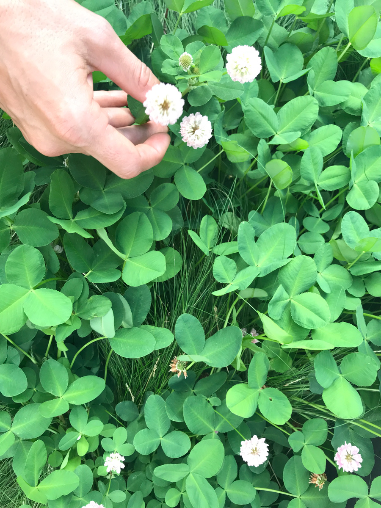

About Us
Serquis and Associates is an award-winning Landscape Architecture
firm with over 20 years of experience creating designs that combine
beauty and human comfort, resulting in a true sense of place. In
collaboration with our clients and multi-disciplinary teams, each
project is a unique creation influenced by site and environment, an
enriching process that concludes with a landscape connecting people
to places.

Design Philosophy
Successful designs should engage the environment, have fluency among
history, land forms and architecture, express rhythm with textures
and interest among the seasons. We believe there is a close
connection between balancing human needs and preserving what nature
has given us to enjoy, and that beautiful surroundings nourish the
human spirit. We are passionate about communities, whether they be
rural or urban settings. We truly understand the social impact where
clear landscape design helps connection between community and
peoples, where they relate to and learn from the natural and built
environment. We create multi-disciplinary teams, including the
client, catering to each and every project to form think tanks that
inspire ideas that are most appropriate to the site and users.
Solange Serquis
Landscape Architect, Firm Owner, and Lead Designer
Solange studied at the University of Buenos Aires completing a
program inclusive of architecture, agricultural science and
landscape architecture, with a final thesis in “Healing Gardens”.
Solange will provide landscape architecture services as the primary
local landscape architect. Solange’s design background focuses on
integrating process-design with the ecological concepts and
educational opportunities for master planning and landscape design.
She has worked in both private, public and non-profit organization
design environments on community, educational, and agricultural
projects. Solange is the principal of Serquis + Associates as well
as a very active participant in the community. With Spanish as her
first language and English her second, Solange works passionately
assisting numerous social-kids-educational-friendly events where she
merges her knowledge and activism for educational landscapes and the
relationship between indoor-outdoor spaces with her desire to help
the young.